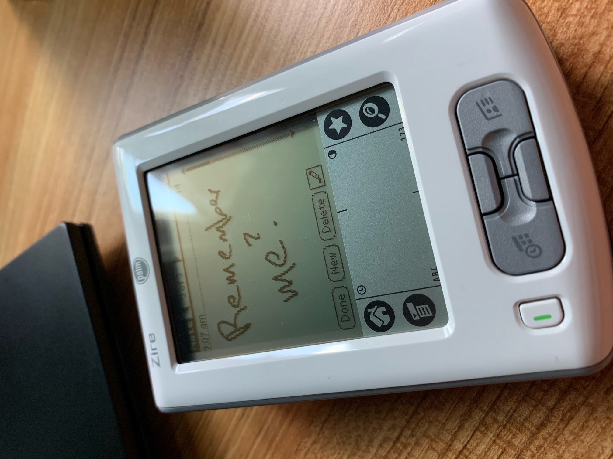
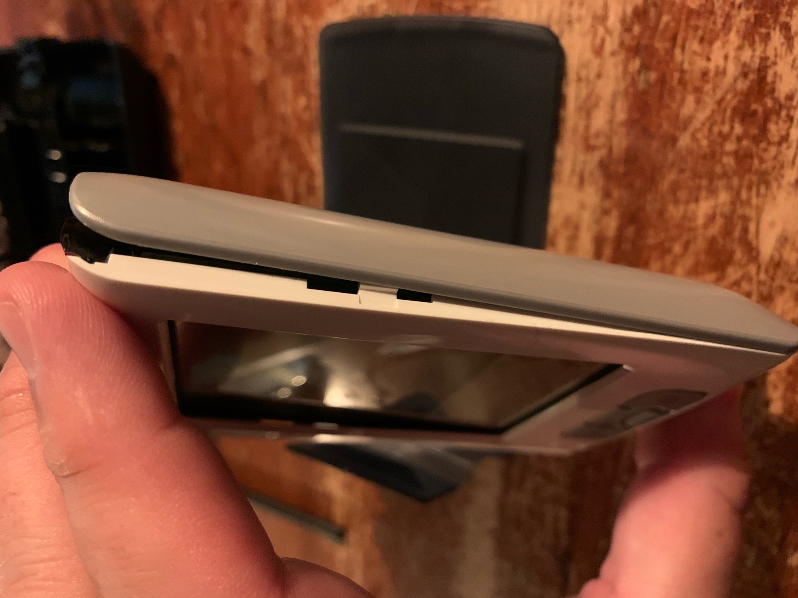
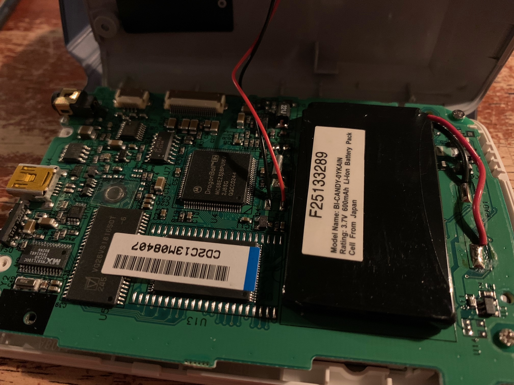
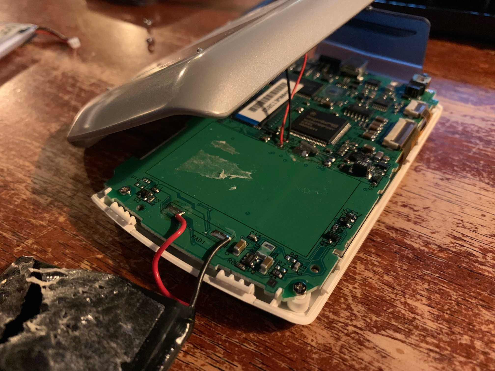
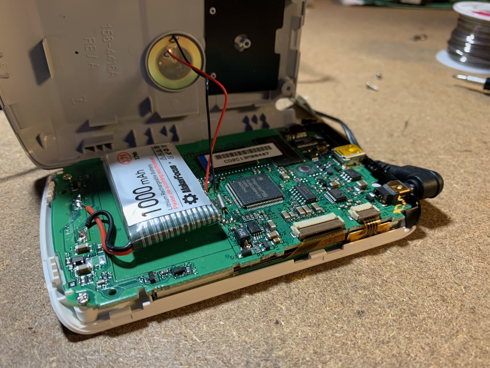
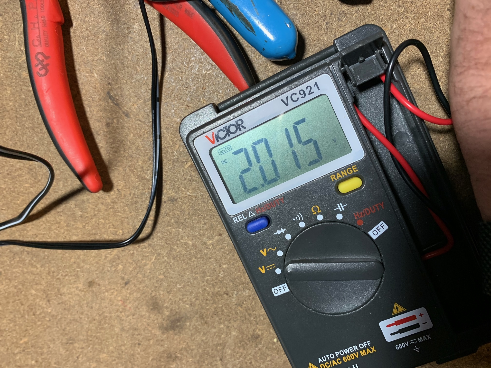
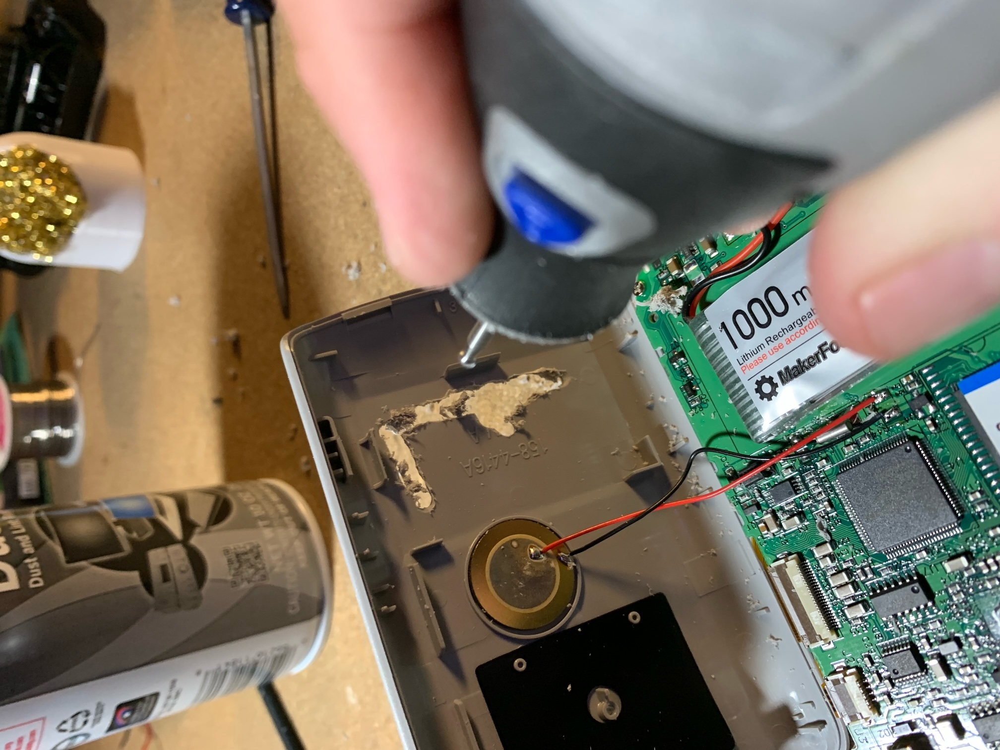
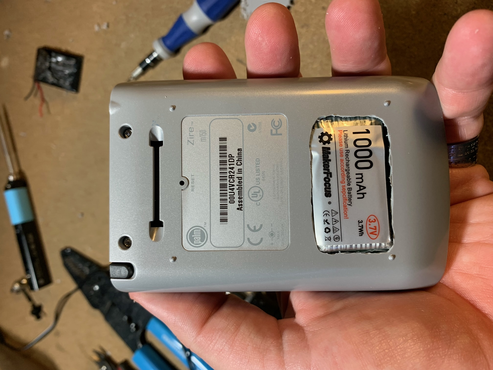

I was surprised to learn that a new-in-box Zire M150 can be found on eBay for about $20 shipped, and within a week I had one back in my hands again.
You might ask “Why the Zire? There are much more powerful devices like this in the same price range.”. There are a couple of reasons. The Zire is old enough to have no network connection but new enough to have USB. It has a rechargeable battery but also a black & white LCD so a charge goes a long way (weeks). It’s small and tough but not heavy. It also has a nostalgia factor for me because it was one of two Palm devices I’ve owned before.
While it arrived NIB, the hardware was not without problems. The primary one being that the battery would not hold a charge. I don’t mean it held a reduced charge, it held no charge at all. This became apparent when there was a brownout as I was setting up the device (while plugged in) and it reset itself to the welcome screen when the power came back on.
It’s not surprising that the batter is toast. This particular device has been in a blister pack since the early 2000’s, and it uses the lipo to maintain the contents of the devices memory. These batteries will become damaged if the voltage is allowed to fall below a certain level and over that many years I’m sure it dropped to zero.
Hardware Mode
Fortunately these devices are much easier to open than a contemporary handheld, and I just happen to have a few spare 3.7v lipos in the lab.



The original battery is rated for 650mAh but the only thing I had on-hand were 1000mAh cells. This isn’t a bad thing, in fact it means that I could keep this thing running for a month or more on a single charge. There was one small problem however: the new cell was slightly chubbier than the original.

With the replacement cell soldered-in, I plugged in the charger to see if it still worked.
It didn’t turn on.
I checked the voltage to make sure the battery had something in it (probably should have done that before soldering it in…). The voltage was at a safe level and climbing, indicating that the charging circuit was working as well.

After letting the battery charge this way for about 30 minutes I was able to get the device to come back to life with a press of the reset button.
At this point I tried squeezing the case back together around the larger cell but it was not having it. I was going to have to modify the case or order a replacement with the same dimensions as the original.
Since I was already getting used to the idea of even longer battery life (not to mention feeling impatient), I decided to go the case mod route. After evaluating the options, I decided to take a Dremel to the case.

The results are not too bad. They are not great, but good enough.

After getting everything back together I put the whole thing back on the charger and turned my attention to the software side of things.
pilot-link
I’m going to use this device primarily with my System76 laptop that runs PopOS, so whatever software I use is going to have to work with Linux. I was able to find a lot of different software packages to work with Palm OS on Linux, but most of them have not been maintained in awhile and are no longer packaged for most distros. After digging around some I was able to locate the source code for a suite of CLI tools and created a form of their repository for safe keeping here:
After some fiddling I was able to get the tools compiled and successfully communicating with the Zire. I was able to perform a full backup, import/export contacts and a few other essential things all from the comfort of a bash prompt.
With these tools in hand it should be a simple matter of some scripting to automate everything, I just need to decide on exactly what I want that automation to do. I know that I want the device to be the system-of-record for my data, and I never want the data to be removed by any external process, but I’d also like to integrate the data with other devices.
So now I have some design work to do. I didn’t expect to get this far so quickly, but with the functional hardware and basic CLI software I now have all the parts I need to build exactly what I want.